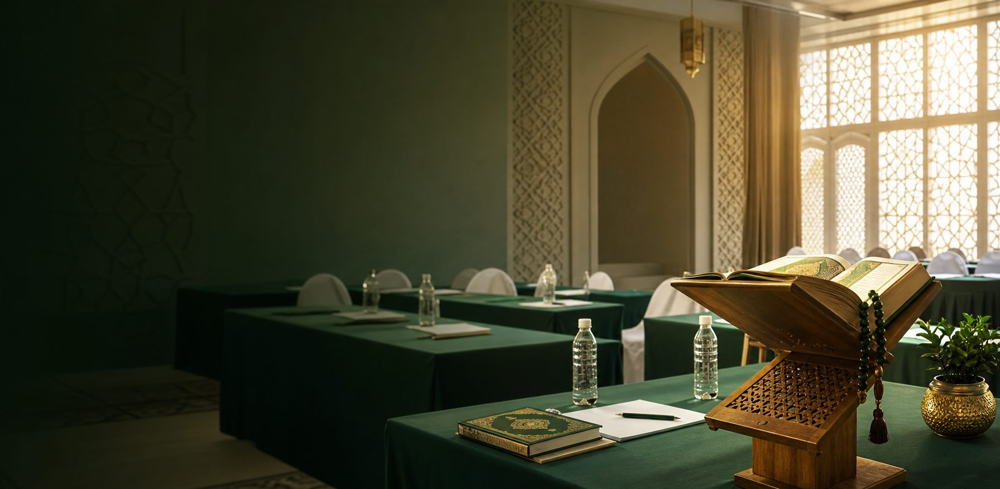

Formation islamique
Des rencontres, rappels et activités pour renforcer les connaissances et encourager l’assiduité.

L’ASAA rassemble des frères et sœurs engagés pour la formation islamique, l’encadrement de la jeunesse et le service communautaire, avec sérieux, pudeur et esprit fraternel.
Notre engagement
L’ASAA agit avec une conviction simple : une jeunesse bien accompagnée peut apprendre avec méthode, servir sa communauté avec respect et grandir dans le bon comportement.
Des rencontres, rappels et activités pour renforcer les connaissances et encourager l’assiduité.
Un cadre d’émulation qui valorise l’effort, la révision et la maîtrise des bases religieuses.
Une attention particulière portée aux jeunes, à leur progression et à leur sens des responsabilités.
Des actions utiles, menées dans un esprit d’entraide, de discrétion et de confiance.
Événement principal
La finale réunira dix candidats retenus après plusieurs étapes de présélection. Au-delà du concours, l’ASAA souhaite offrir un moment de formation, de respect et d’encouragement pour toute la communauté.
Annonces
Les finalistes se retrouveront à la Salle N’zassa pour une dernière étape dédiée à l’apprentissage et à la maîtrise.
La campagne présentera les finalistes avec dignité, en mettant en avant leur commune et leur engagement.
Familles, sympathisants et partenaires sont invités à soutenir les candidats et à encourager la recherche du savoir.
S’engager
Bénévolat, relais de communication, soutien logistique, accompagnement des jeunes ou partenariat : l’ASAA avance grâce aux personnes qui servent avec sérieux.